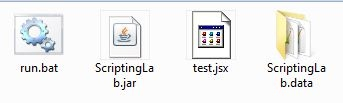
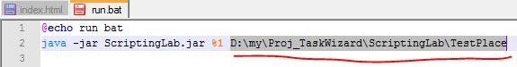
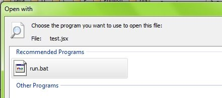

Installation
Có 2 cách cài đặt chương trình chính: dạng portable, chạy file .jar ở
thư mục bất kỳ hoặc thực thi file script có đuôi .jsx (khi đã cài đặt
chương trình ở đâu đó từ trước).
Run as portable program
Đảm bảo rằng trong thư mục có cả tệp thực thi Execute files with association
.jsx-
Chép 3 tệp
ScriptingLab.jar, run.bat, test.jsxvà thư mụcScriptingLab.datavào một thư mục bất kỳ.
 -
Sửa nội dung tệp
run.bat. Thay đường dẫn tới thư mục chứa những tệp cài đặt này vào vị trí được tô đậm. Ở đây thư mục cài đặt của tôi làD:\my\Proj_TaskWizard\TestPlacenên nội dung tệprun.batnhư sau:
 -
Đăng ký các tệp có đuôi
.jsxmở bằng chương trình. Nhấp phải chuột vào tệptest.jsxchọn Open with..., Nhấp Browse... trong hộp thoại Open with, trỏ tới tệprun.batnày trong hộp thoại chọn tệp, OK.
 Run from command line (less common)
ScriptingLab.jar
và thư mục ScriptingLab.data. Thư mục ScriptingLab.data
để chứa các thư viện mở rộng và chương trình chính.Quá trình nạp các tệp khi khởi động:
Cài đặt đã hoàn tất. Giờ các tệp có đuôi
.jsx ở vị trí bất kỳ sẽ
luôn được mở bằng chương trình. Tệp .jsx là một tệp javascript.
Giờ hãy kiểm tra bằng cách nháy đôi vào tệp test.jsx